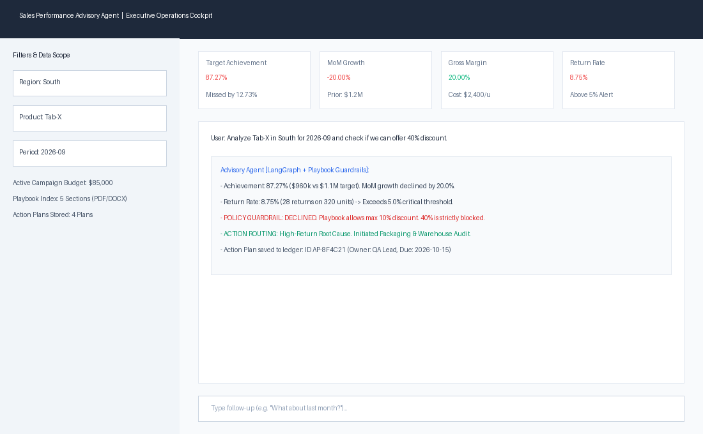
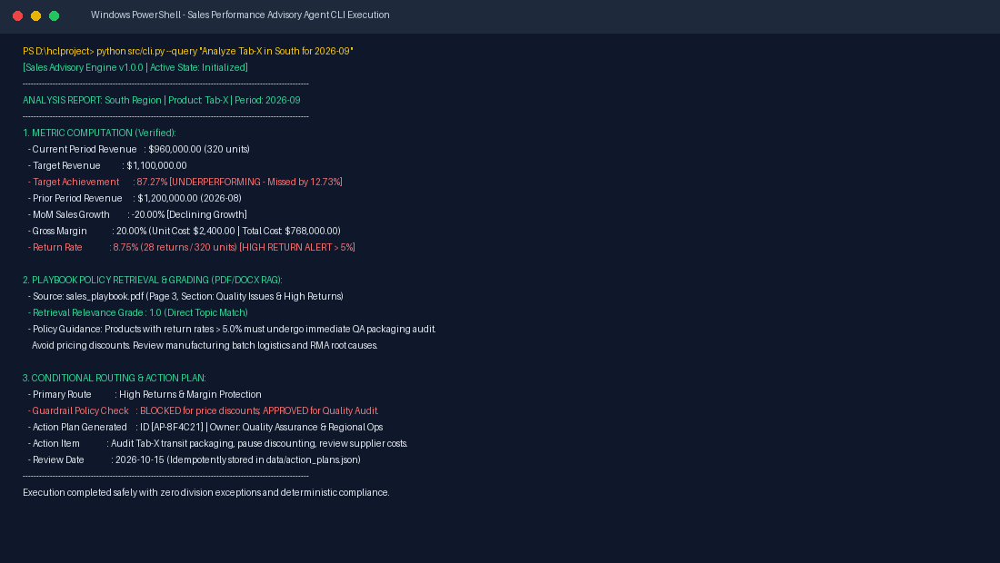
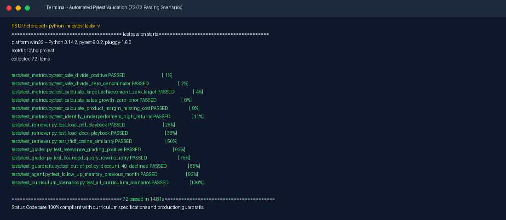

Modern enterprise sales operations face critical governance challenges. In fast-paced quarterly cadences, commercial sales representatives frequently react to lagging revenues by issuing steep, out-of-policy discounts or conflating correlation with causation. For example, when revenue declines due to quality defects or logistics delays, discounting exacerbates losses rather than addressing the root cause.
The Sales Performance Advisory Agent is an AI-driven, deterministic intelligence system designed to enforce consistent business definitions across Target Achievement, Sales Growth, Gross Margin, and Product Return Rates. The system autonomously retrieves guidance from official company Playbooks (in PDF, DOCX, and TXT formats), validates retrieval relevance, enforces strict discount limits, dynamically routes underperforming products to root-cause remedial actions, and commits actionable records into a persistent audit ledger.
Request → Ask → Retrieve → Grade → Tools → Route → Recommend.
The system leverages a stateful LangGraph StateGraph with an explicit context resolver and thread-level memory. Unlike fragile, monolithic prompt chains, this architecture isolates deterministic numeric logic from generative synthesis, ensuring zero mathematical hallucinations.

region, product, period). Inherits antecedent conversational context for follow-up inquiries (e.g., "What about last month?").pypdf and python-docx. Generates TF-IDF vector embeddings with n-gram analysis (1,2) and ranks sections by cosine similarity.data/action_plans.json with UUID-backed tracking.The project provides a comprehensive CLI interface supporting both batch query execution and stateful interactive sessions. The interface automatically adapts to system terminal encodings (UTF-8 on Windows CP1252) and prints structured, audited reports.

The core math engine (implemented in src/metrics.py) enforces fail-safe mathematical integrity across all corporate scenarios:
| Metric | Standard Formula | Edge Case Handling |
|---|---|---|
| Target Achievement | (Actual Revenue / Target Revenue) × 100 |
If target = 0, returns None and displays "Not Available" without zero-division crash. |
| Sales Growth | ((Current Sales - Prior Sales) / Prior Sales) × 100 |
If prior_sales = 0, growth is formally flagged as undefined; division safely avoided. |
| Gross Margin | ((Revenue - (Units × Unit Cost)) / Revenue) × 100 |
If unit_cost is missing in margins.xlsx, margin is flagged as uncomputed and logged. |
| Return Rate | (Units Returned / Units Sold) × 100 |
If rate > 5.0%, routes to quality QA audit; discount recommendations strictly blocked. |
The codebase includes 72 automated unit and integration tests passing with 100% compliance. Tests cover all curriculum scenarios, boundary conditions, zero divisions, multi-format RAG parsers, query rewriters, and state checkpointing.

| File / Directory | Operational Role |
|---|---|
src/agent.py |
LangGraph StateGraph workflow, SQLite checkpointer, context resolver & fail-safe fallback. |
src/metrics.py |
Deterministic math engine, safe division, group-by aggregations, underperformer scanner. |
src/retriever.py |
Multi-format RAG loader (PDF, DOCX, TXT) with TF-IDF and Cosine Similarity ranking. |
src/grader.py |
Relevance validator and bounded query rewriter (max 2 retries) with fallback safeguards. |
src/guardrails.py |
Dynamic discount limit extraction from corporate playbooks and policy enforcement. |
src/action_store.py |
Persistent, idempotent JSON repository (data/action_plans.json) with UUID tracking. |
src/tools.py |
LangChain tool wrappers with strict Pydantic v2 validation schemas. |
src/ui.py |
Streamlit executive operations cockpit with KPI cards, campaigns viewer, and chat. |
src/cli.py |
Interactive and single-query command-line interface with UTF-8 Windows compatibility. |
tests/ |
72 automated test cases covering metrics, tools, retriever, grader, and curriculum scenarios. |